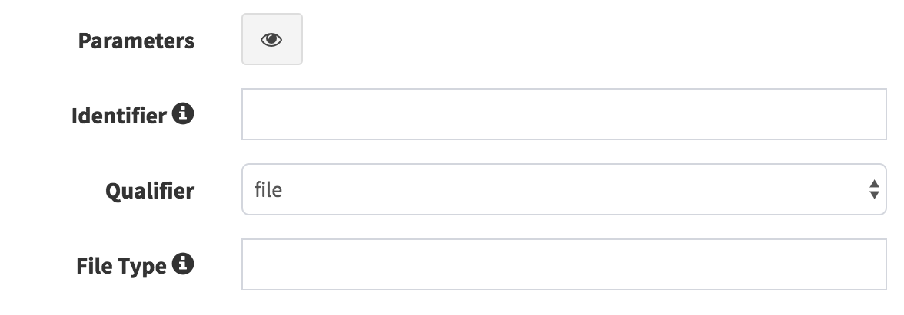
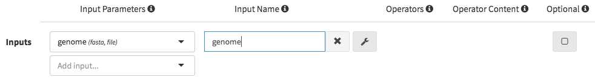
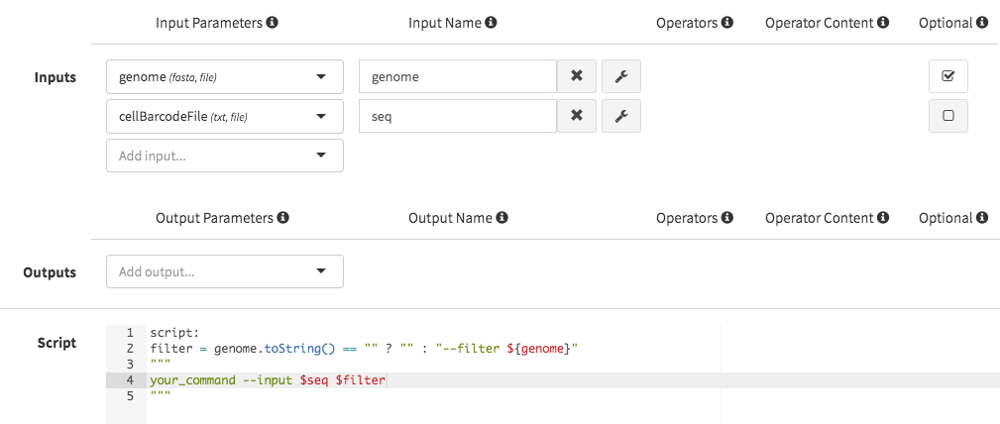
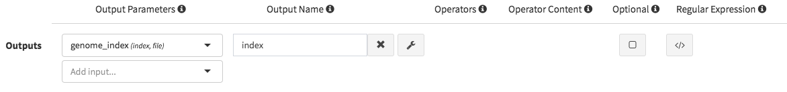
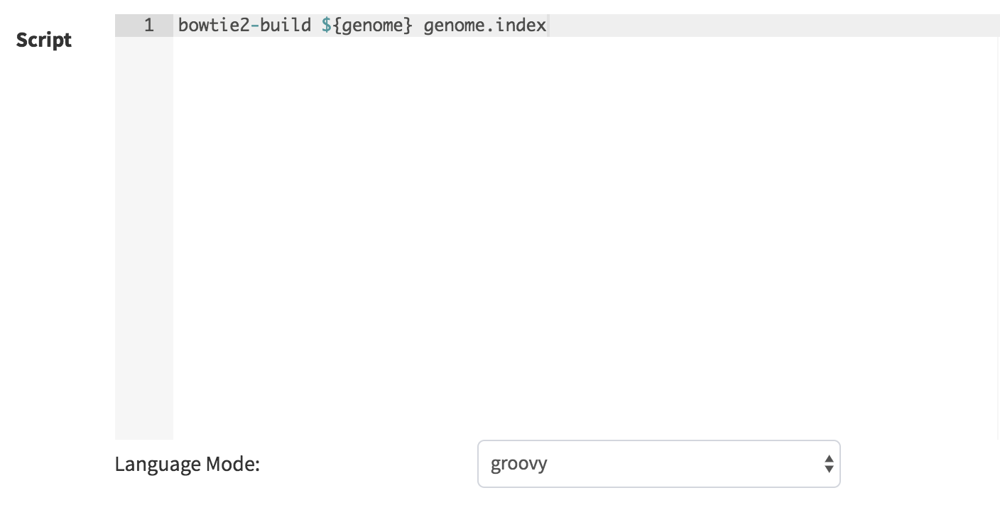
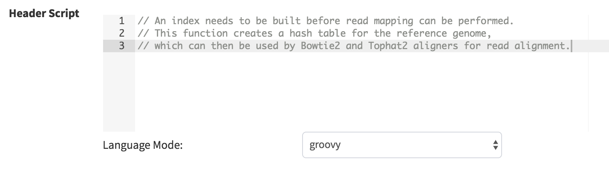
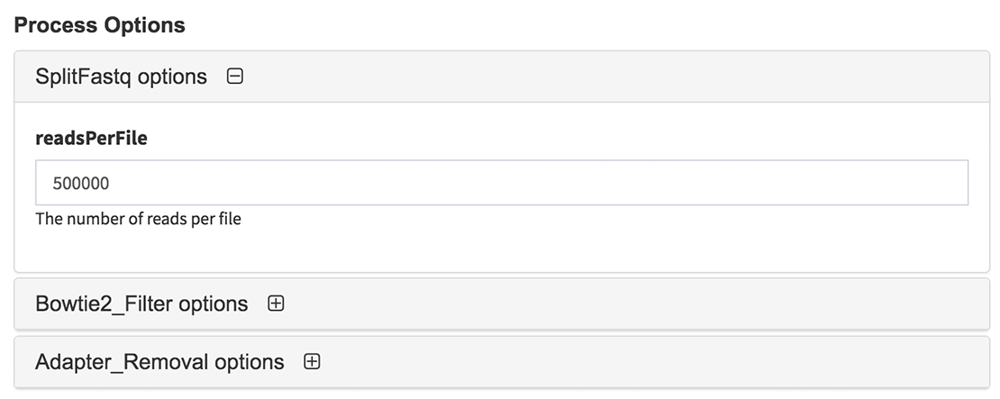
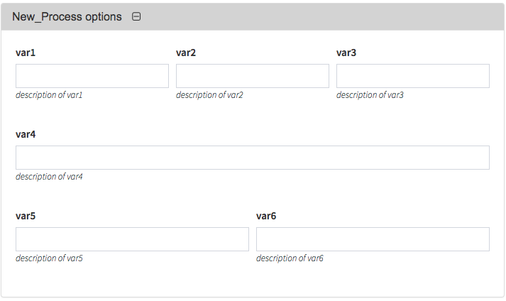
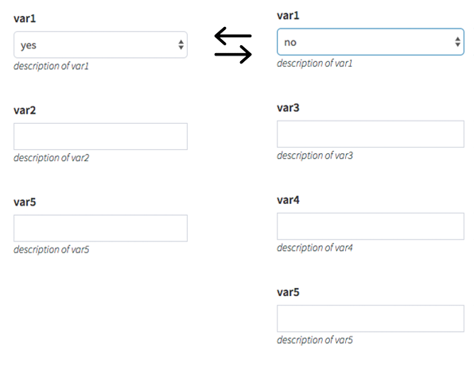

Process Guide¶
This guide will walk you through the creation of DolphinNext process.
Process Window¶
Once logged in, click on the pipeline tab in the top left of the screen. You’ll notice several button at the left sidebar menu. New processes are created by clicking green “New process” button.

Basics¶
Once you clicked green “New process” button, new window will appear to define process components.
- Name: Process name is entered in this block. After creation of process, this name will appear in the left sidebar menu under the selected menu group.
- Description: An explanation of how process works is described in this region.
- Menu group: Selection of menu group which categorizes the processes in the left sidebar menu. If it is required, you may add new menu groups by clicking “add menu group” button. Afterwards, you may edit or delete these new groups by “edit menu group” or “delete menu group” buttons.
Parameters¶
This section is used to create parameters which will be used while defining inputs or outputs. New parameters are created by clicking “add parameter” button.
Identifier: Identifier is simply parameter name and allows you to call same parameters in other processes.
- Qualifier: Three main type of qualifiers (
file,setandval) are exist in DolphinNext: File: Uses the received value as a file. Example usage in nextflow file:
file genome
Set: Allows to handle a group of input values having other qualifiers. Example usage:
set val(name), file(genome)
Val: Allows to access the received input value by its name in the process script. Example usage:
val script_path
Each: Lets you execute the process for each entry in the input collection. Example usage:
each bed_list
- Qualifier: Three main type of qualifiers (
File type: If qualifier is set to
fileorset, file type option will appear. This option will be used to filter available nodes while generating pipelines.
Tip
For instance, you may create genome parameter by entering identifier as:genome, qualifier: file and file type: fasta. Similarly for creating script_path parameter you can define identifier as:script_path and qualifier: val.
Note
When qualifier set to val, identifier is used to filter available nodes while connecting each nodes. If file or set is selected as qualifier, file type is used for filtering available nodes. When qualifier is set to each, you may enter both file type (if you’re planing to connect with file nodes) or identifier (in case of connecting to val nodes.)
Inputs¶
This section where you enter all of your input nodes of the process. You can start adding by clicking “Add input…” dropdown. After adding selected parameter as a input node, “input name” box and “add operator” and “optional” buttons will appear.
Input name box used to define nextflow variables which will be used in the scripts section. For instance, if you enter input name as genome, in the scripts section you can recall this variable as ${genome}. Other examples are listed in the following table:
| Qualifier | Input name | Recall in the Script |
|---|---|---|
| val | script_path | ${script_path} |
| each | bed_list | ${bed_list} |
| file | genome | ${genome} |
| set | val(name), file(genome) | ${genome} |
| set | val(name), file(genome) | ${name} |
Additionally, if you need to transform values emitted by a channel, you can click “operators” button and select operators from dropdown. For detailed information, you can continue to read operators section.
- Optional Inputs:
If you want use optional input parameter, you can check the optional checkbox. This feature allows flexibility for the user while defining process since the process will be executed in spite of the absence of the input parameter. Please check the example below for the use case:
Here, filter parameter will be defined as blank string in case input parameter genome is empty. Otherwise, when input parameter genome is found, filter parameter will be defined as ---filter ${genome}".
Note that the existance of genome variable is required to be checked after using toString() operator:
filter = genome.toString() == "" ? "" : "--filter ${genome}"
Outputs¶
The output nodes are defined in this section. Similar to adding inputs, by clicking “Add output…” dropdown and selecting output parameter will show output name box, add operator and add regular expression buttons.
Output files, created by the process, are grabbed by “output name” box. By entering the pattern of the output files eg. "genome.index*" would grab the files that are starts with genome.index. Besides you can use nextflow variables which are defined in inputs or scripts section. As an example, if you enter input name as genome, in the outputs section you can recall this variable as "${genome}_out.txt". Other examples are listed in the following table:
| Input Qualifier | Input name | Output Qualifier | Output name |
|---|---|---|---|
| file | genome | file | “${genome}_out.txt” |
| set | val(name), file(reads) | set | val(name), file(“${name}.unmap*.fq”) |
| set | val(name), file(reads) | file | “${name}.bam” |
| set | val(name), file(genome) | file | “genome.index*” |
Additionally, if you need to transform values emitted by a channel, you can click “operators” button and select operators from dropdown. For detailed information, you can continue to read operators section. In addition to operators, regular expressions can be activated by clicking “regular expressions” button. You can learn more about this section by clicking regular expressions section.
- Optional Outputs:
If your process doesn’t generate some outputs in some circumstances, you can check the optional checkbox which tells Nextflow not to fail the process if the declared output is not created.
Scripts¶
Main process scripts are defined in this region. Three type of mode are available in Nextflow: A. Script B. Shell C. Exec. These statements defines how the command going to be executed by the process.
A. Script:
For simplicity, DolphinNext uses script format by default. So defined commands will be executed as BASH script in the host. It is same as using three double quotes """ at the start and the end of the command block. If you use three double quotes, DolphinNext will take that particular area as command block. Therefore, following two blocks will be executed as same:
script:
"""
tophat2 -o . ${indexPath} ${reads}
"""
OR
tophat2 -o . ${indexPath} ${reads}
These blocks can contain any command or script that is typically used in terminal shell or BASH script.
Let’s analyze more complicated version of script block. Here nextflow variable name is defined in between script: keyword and three double quotes """:
script:
name = reads.toString() - '.fastq' //local scope for nextflow variables
"""
newPath="/mypath" // inside of """ block is used for define bash variables in local scope
tophat2 -o . \${newPath} ${name}
"""
Note
newPathvariable is defined in bash script and used in tophat command as\${newPath}. (Note that bash variables need to be escaped by backslash)namevariable is defined in scope of groovy as nextflow variable and used in tophat command as${name}.
- Conditional Scripts:
Conditional scripts can be used with control statements such as if, switch etc. In order to use these feature, you must start the code block by using script: keyword. In this way, the interpreter will evaluate all the following statements as a code block and find the script string to be executed. Please check the following example:
script:
name = reads.toString() - '.fastq'
if (mate == "pair") {
"""
bowtie2 -x genome.index -1 ${reads.join(' -2 ')} -S ${name}_alignment.sam --un-conc ${name}_unalignedreads
"""
}
else if (mate == "single") {
"""
bowtie2 -x genome.index -U $reads -S ${name}_alignment.sam --un ${name}_unalignedreads
"""
}
Tip
As shown in the example above, it is possible to run Bowtie based on mate status of the reads. In order to activate this property, you must add mate parameter as an input. While you are running the pipeline, you may select single or pair option according to your needs.
B. Shell:
Alternatively, you can use shell block where Nextflow variables are declared by exclamation mark !. This feature allows you to use both Nextflow and BASH variables in the same code without using escape character. In order to use shell mode, you start code by adding shell: and add three single quotes (''') at the start and the end of the command block:
shell:
'''
echo $PATH and !{new_path}
'''
Here is the use case of a perl script block:
shell:
name = reads.toString() - '.fastq' //local scope for nextflow variables
'''
#!/usr/bin/env perl // inside of ''' block you can define perl (or other language) variables in local scope
$newPath="/mypath";
system("tophat2 -o . ${newPath} !{name}");
'''
Note
$newPathvariable is defined in perl script and used in tophat command as${newPath}. (Note that variables don’t need to be escaped by backslash ifshell:keyword is used.)namevariable is defined in scope of groovy as nextflow variable and used in tophat command as!{name}.
C. Exec:
Nextflow processes allows you to execute native code other than system commands. This way you may easily follow local Nextflow variables. To start exec mode, you can add exec: block at the beggining of the script:
exec:
println "${genome}"
Operators¶
If you need to transform values emitted by a channel, you can click “operators” button and select operators from dropdown. Optionally, operator content could be specified to adjust their act. Besides, multiple operators can be added by starting paranthesis (. Examples are listed in the following table:
| Operator | Operator Content | Usage |
|---|---|---|
| flatMap | ().buffer(size:3) | Groups 3 emitted item into one new channel. |
| mode flatten | To emit each output file as a sole item | |
| groupTuple | Collects tuples (or lists) of values emitted and groups them based on their key value. |
Tip
To get more information about operators, you can use this link to reach Nextflow documentation.
Regular Expressions¶
This is optional regular expresion feature to filter output files. By default DolphinNext uses output name box pattern to decide which files are going to be transferred to output directory. If this feature is not sufficient or additional filtration is required, then regular expression feaure might be activated by clicking “Regular Expressions” button at the outputs section. Example usage:

Header Script¶
This section allows you to add additional scripts or comments before process block starts. This way you may recall same function several times in the script section.
Process Options¶
You may separate your main process inputs and optional parameters by using Process Options feature. On the run page, these parameters will be asked separately in the Process Options section as in the image shown at below:
In order to create these forms, you need to use following syntax in the script or process header section:
variableName = defaultValue //* @formType @description:"..." @tooltip:"..." @options:"..."
Note
You can define defaultValue with single/double quotes (for strings) or without any quotes (for numbers). If you define your variable as an array by using @style tag, you may enter more than one default value by using following array format: variableName = ["defaultValue1","defaultValue2"]
- @formType: Four type of form fields are available in DolphinNext (
@input,@textbox,@checkbox,@dropdown):
@input¶
It creates single-line text field. Example usage and created form field in run page:
readsPerFile = 5000000 //* @input @description:"The number of reads per file"
params_tophat = "-N 4" //* @input @description:"Tophat parameters" @tooltip:"parameters for Tophat2 version 2.6"
@textbox¶
It creates multi-line text field. Example usage and created form field in run page:
Adapter_Sequence = "" //* @textbox @description:"You can enter a single sequence or multiple sequences in different lines."
@checkbox¶
It creates checkbox for the user and their available options are defined as true or false by default. Example usage and created form field in run page:
run_rRNA_Mapping = "false" //* @checkbox @description:"Check the box to activate rRNA mapping."
rRNA_filtering = "true" //* @checkbox @description:"Check the box to filter rRNA reads."
@dropdown¶
It create dropdown menu and their options can be specified by entering @options feature. Example usage and created form field in run page:
genomeType = "" //* @dropdown @description:"Genome type for pipeline" @options:"hg19","mm10", "custom"
@description¶
You can describe inputs by using @description tag. Please check the examples at above.
@tooltip¶
You can also create tooltip to add detailed explanation by using @tooltip tag. See the example at below:
params_tophat = "-N 4" //* @input @tooltip:"parameters for Tophat2 version 2.6" @description:"Tophat parameters"
@title¶
You can also create header on top of the variable by using @title tag. This way you can easily organize the complicated form structures. See the example at below:
params_tophat = "-N 4" //* @input @title:"Alignment Section" @description:"Tophat parameters"
@options¶
When you define @dropdown as a formType, you should define available options by using @options tag. Please check the simpliest version of dropdown:
genomeType = "" //* @dropdown @options:"hg19","mm10","custom"
Conditional Options - Version 1 (Advanced Usage): Same process can be seen different in different pipelines. In order to control the dropdown options that are visible, you can define variables in the pipeline header which starts with underscore. For instance:
_nucleicAcidType = "rna" //In RNA-seq pipeline header _nucleicAcidType = "dna" //In ChIP-seq pipeline header
and you can control which options will be visible by using following format:
param = "" //* @dropdown @options:{_nucleicAcidType="rna","rRNA","miRNA","snRNA"},{_nucleicAcidType="dna", "ercc","rmsk"}
Now, param dropdown will have 3 options (“rRNA”,”miRNA”,”snRNA”) in RNA-seq pipeline and 2 options (“ercc”,”rmsk”) in ChIP-seq pipeline. Similarly you can define default options by not assigning any value as seen at the example below:
param = "" //* @dropdown @options:{"rRNA","miRNA","snRNA"},{_nucleicAcidType="dna","ercc","rmsk"}
Here, by default 3 options(“rRNA”,”miRNA”,”snRNA”) will be visible unless in the pipeline header _nucleicAcidType="dna" is defined.
Conditional Options - Version 2 (Advanced Usage): You can control the dropdown options that are visible, based on the selected parameter in other dropdown. Please check the example below, where dropdown called
sequencecontrols the visible options of the dropdownaligner:aligner = "" //* @dropdown @options:{sequence=("rRNA","miRNA","snRNA"),"bowtie","bowtie2"},{sequence="genome", "star"}
When sequence is selected as one of the following options:”rRNA”,”miRNA”,”snRNA”, aligner will have “bowtie and bowtie2” options. Similarly, “star” will be seen, if sequence selected as “genome”.
Styles for Process Options¶
You might use additional tags to give specific shapes to form fields: A. @multicolumn B. @array C. condition.
A. @multicolumn¶
Example:
var1 = "" //* @input @description:"description of var1"
var2 = "" //* @input @description:"description of var2"
var3 = "" //* @input @description:"description of var3"
var4 = "" //* @input @description:"description of var4"
var5 = "" //* @input @description:"description of var5"
var6 = "" //* @input @description:"description of var6"
//* @style @multicolumn:{var1, var2, var3}, {var5, var6}
In this example, var1, var2 and var3 will be located in the same row, by default var4 will fill single row and, var5 and var6 will share same row as shown at below.
{kind=link}
B. @array¶
Example:
var1 = "" //* @input @description:"description of var1" @title:"Step 1"
var2 = "" //* @input @description:"description of var2"
var3 = "" //* @input @description:"description of var3"
var4 = "" //* @input @description:"description of var4" @title:"Step 2"
//* @style @array:{var1, var2}, {var4}
In this example, var1, var2 are grouped together and linked to add/remove buttons. When add button is clicked new var1, var2 fields will be created just below var1 and var2. Similarly remove button will remove generated copies of form fields. Similar features exist for just var4 variable. Please see the image at below.

Tip
You can combine multiple style options on same variables. For example //* @style @array:{var1, var2}, {var4} @multicolumn:{var1, var2} will combine both multicolumn and array features for var1 and var2 as shown below.
{kind=link}
You can define multiple default values by using following syntax:
var1 = ["defVal1", "defVal2"] //* @input @description:"description of var1"
Here, run page will open with two rows and these default values will be defVal1 and defVal2.
C. @condition¶
Example:
var1 = "" //* @dropdown @description:"description of var1" @options:"yes", "no" @title:"Step 1"
var2 = "" //* @input @description:"description of var2"
var3 = "" //* @input @description:"description of var3"
var4 = "" //* @input @description:"description of var4"
var5 = "" //* @input @description:"description of var5" @title:"Step 2"
//* @style @condition:{var1="yes", var2}, {var1="no", var3, var4}
In this example, var1 value is binded to other form fields. When var1 is selected as “yes”, field of var2 will be shown. Whereas when var1 is changed to “no”, then var2 field will disappear and var3 and var4 fields will appear. Since var5 is not defined in @condition tag, it will be always seen while changes happening in other fields. Please see the example at below:
{kind=link}
Tip
Similar to previous tip, you can combine all style options on same variable. For example //* @style @condition:{var1=”yes”, var2}, {var1=”no”, var3, var4} @array:{var1, var2, var3, var4} @multicolumn:{var1, var2, var3, var4} will combine features as shown below:

Autofill Feature for Process¶
Hostname Independent Autofill:¶
If you want to define executor properties that are going to be automatically filled by default, you can use following syntax:
//* autofill
<executor properties>
//* autofill
Hostname Dependent Autofill:¶
Additionally, you might overwrite default executor properties by using hostname dependent executor properties. Please check the following syntax:
//* autofill
<executor properties>
if ($HOSTNAME == "ghpcc06.umassrc.org"){
<hostname dependent executor properties>
}
//* autofill
Here, $HOSTNAME is DolphinNext specific variable that recalls the hostname which is selected in the run as Run Environment. Therefore, in this example, all <executor properties> will be automatically filled in case of pipeline is going to run on ghpcc06.umassrc.org.
Executor Properties:¶
Five type of executor properties are available to autofill Executor Settings for Each Process: $TIME, $CPU, $MEMORY, $QUEUE, $EXEC_OPTIONS which defines Time, CPU, Memory, Queue/Partition and Other Options. See the example below:
//* autofill
$TIME = 1000
if ($HOSTNAME == "ghpcc06.umassrc.org"){
$TIME = 3000
$CPU = 4
$MEMORY = 100
$QUEUE = "long"
$EXEC_OPTIONS = '-E "file /home/garberlab"'
}
//* autofill

In the example, since run environment is selected as ghpcc06.umassrc.org, autofill feature overwrited the default $TIME value (1000) and filled with 3000.
Platform Tag:¶
Optionally, you can isolate platform dependent paramaters by using platform tag. This way, exported process won’t have the platform dependent parameters and similarly when process is imported, exisiting platform dependent parameters won’t be overwritten. Please check the the example usage at below:
//* autofill
$MEMORY = 32
$CPU = 1
//* platform
if ($HOSTNAME == "ghpcc06.umassrc.org"){
$TIME = 3000
$CPU = 4
$MEMORY = 100
$QUEUE = "long"
$EXEC_OPTIONS = '-E "file /home/garberlab"'
}
//* platform
//* autofill
Permissions, Groups and Publish¶
By default, all new processes are only seen by the user that created them. You can share your process with your group by selecting permissions to “Only my groups”. If you want to make it public, you can change Publish option to ‘Yes’. After verification of the process, process will be publish to everyone.
Copying and Revisions¶
It is always allowed to create a copy of your process by clicking “Settings” button at the right top of the process window and selecting “Copy Process”. When your process is become public or it has been used by other group members, it is not allow to make changes on same revision. Instead, new revision of the process is created and changes could be done on this revision.